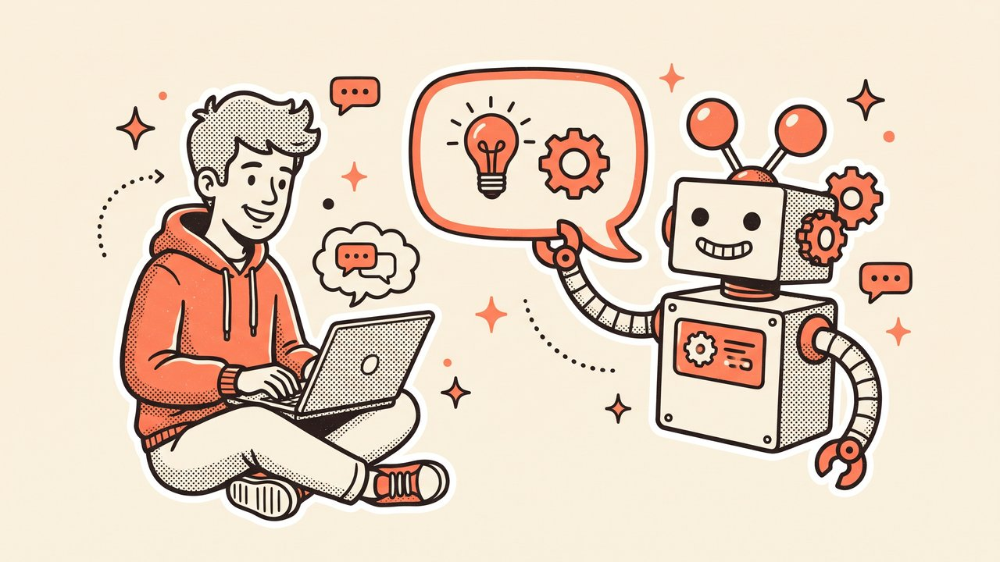

Prompts for content: how to write requests to a neural network

The same request can produce very different results - it all comes down to how you phrase it. A weak prompt returns filler and clichés, a strong one delivers ready-made ideas, scripts, and copy tailored to your niche. Knowing how to write prompts for content saves hours and turns the neural network into your personal editor. Let's break down how to write requests that deliver results on the first try.
What makes up a strong prompt
A good request answers four questions for the neural network. Give it these inputs, and quality jumps significantly:
- Role - who the neural network should be: short-video strategist, copywriter, scriptwriter.
- Context - your niche, audience, and their pain points.
- Task - what needs to be done and why.
- Format - how the answer should come back: a list, a table, a second-by-second script.
The more specific the inputs, the less filler in the output. A generic request produces a generic answer.
The prompt formula
Build your request using a clear structure and reuse it every time:
You are [role]. My niche is [niche], audience: [pain points]. Do [task]. Response format: [format]. Tone: [tone].
This framework eliminates empty answers. The neural network stops guessing and works by your rules.
Prompt templates for blog tasks
Keep a set of templates on hand - swap a couple of fields and get a ready result:
| Task | Prompt template |
|---|---|
| Ideas | Give me 20 Reels ideas for the [X] niche with a hook |
| Hooks | Give me 10 opening lines that are impossible to scroll past |
| Script | Expand this idea into a script: hook, build-up, call to action |
| Slides | Break this idea into 5 slides: text and image idea for each |
| Caption | Write a caption with a hook, value, and call to action |
These five requests cover the entire content cycle.
How to strengthen any prompt
If you don't like the answer, don't abandon the request - refine it.
Ask the neural network to ask you for missing details before answering. That way it pulls the necessary context out of you itself.
Add examples of what you like, specify what to avoid, and ask for several options to choose from. A dialogue with clarifications is always more accurate than a single request.
Common prompt mistakes
- Writing a generic request without a niche, role, or format.
- Expecting perfection on the first try instead of refining.
- Not specifying tone - resulting in a bland, faceless text.
- Asking for everything at once in one giant request.
- Copying the answer word for word, without your own edits.
Eliminate these mistakes, and the neural network will start giving you what you actually need.
Frequently asked questions
What must be included in a prompt?
Role, context (niche and audience), task, and response format. These four blocks are enough for a strong result.
Why does the neural network give vague answers?
The request is too general. Add specifics: niche, audience pain points, desired format, and tone - and the vagueness will disappear.
Do I need to write prompts in English?
No. Modern models understand Russian perfectly well. Write in the language of the content you're creating.
How do I get several options?
Just ask directly: give me 3 options to choose from. It's easier to pick a strong one from several drafts.
Can prompts be reused?
Yes, and you should. Save working templates and change a couple of fields for a new topic - this speeds up your work.
not by hand